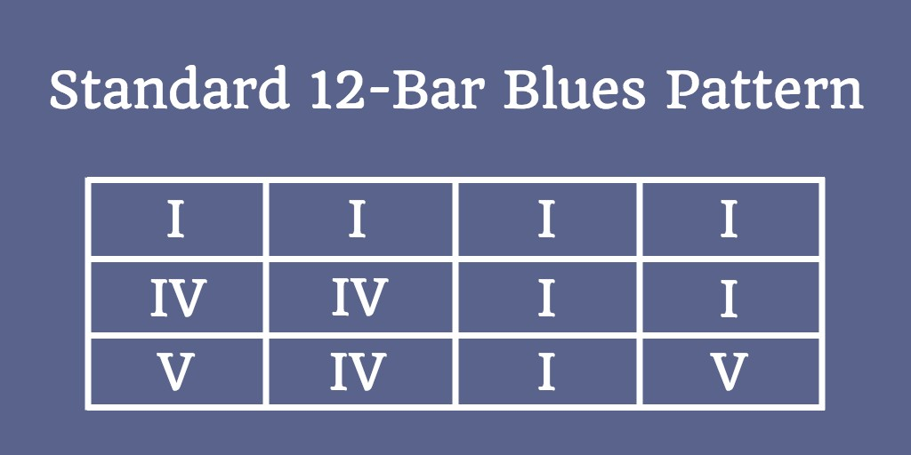
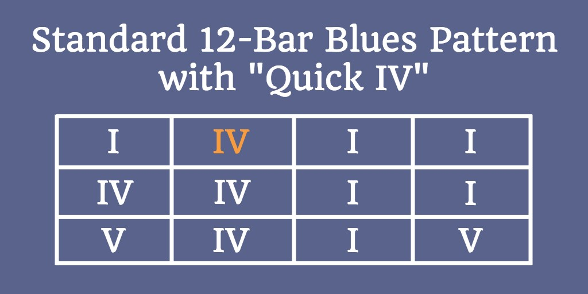
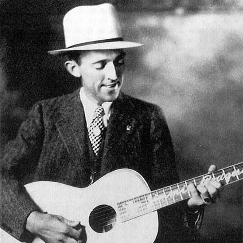

Alternative music was a phrase invented in early 80s describing bands which broke from the barrage of pop and hair metal and formed a new direction of more focused and honest rock.
It includes many subcategories including but not limited to; Grunge, Hard Rock, Rock, Experimental Rock, Progressive Rock, Gothic Rock, Punk Rock, Hardcore Punk, New Wave.
In the early eighties alternative music was limited to a few college radio stations.
In the mid 80s as it became more popular It began to take over college radio throughout the country.
In the late 80s commercial stations slowly began to embrace what up till then had been known as college rock.
They never sold many albums but the influence on the music community would be felt in a big way soon when the format evolved to the next stage.
Alternative rock music is really a name given to rock music that didn’t fit any other genre.
However, the technical meaning is usually any rock music that descended from punk rock.
The popularity of alternative rock music came about after the grunge period.
Grunge was a type of alternative rock music that denounced commercialism.
This movement started in Seattle, Washington and soon took the world by storm.
This was ironic since it was this type of music that helped to create the commercial success for alternative rock music.
Bands such as Pearl Jam, Nirvana, Soundgarden, and the Red Hot Chili Peppers.
Alternative rock music also made a big splash in Britain where punk rock was more popular.
In fact, Alternative rock music entered the mainstream earlier in Britain than it did in the United States.
This gave alternative bands a broader venue even before the popularity of alternative music in the United States.
At its core, the blues has remained the same since its inception.
Most blues feature simple, usually three-chord, progressions and have simple structures that are open to endless improvisations, both lyrical and musical.
Classic 12-bar country blues moved to the city in the black diaspora that accompanied the depression of the 30’s, and as a result gave us urban electric Blues.
Soon there was jump blues, which became Rhythm ’n’ Blues, which then crossed over into Rock ’n’ Roll.
Then Gospel got a taste of the ‘Devil’s music’, and morphed into Soul.
This is perhaps the heart and soul, or the “bread and butter” of the blues. Built around the famous and well-loved I-IV-V progression, the 12-bar blues have been an indispensable staple of the genre since its inception. You have 12 measures that observe a particular scheme, which looks like this:
Where I, IV, and V represent the chords built on the first, fourth, and fifth scale degrees of the key you’re playing in. Note that this use of Roman numerals rather than specific chord names means that you can transpose the 12-bar blues into any key. This pattern is normally played in 4/4 time, being repeated over and over with some soloing and variation thrown in there. For example, for interest, you can add the “quick IV”, where the chord is played in the second bar, replacing the usual I chord:
There are more ways you can tweak and expand on this simple progression. For a great guide on adding sevenths to your chords and how to play basic blues in the key of E, head over to Play Blues Guitar’s guide on blues chord progressions. In countless blues songs, this 12-bar pattern lines up seamlessly with the “AAB” lyric format, with the first four bars corresponding to the first line (“A”), the next four bars corresponding to the second line (the second “A”), and the final four bars corresponding to “B” for both a conclusion to the verse that’s both lyrical and musical!
The word Classical has strong connotations, conjuring up the art and philosophy of Ancient Greece and Rome along with their ideals of balance, proportion and disciplined expression.
The late Baroque style was polyphonically complex and melodically ornate.
The composers of the early Classical period changed direction, writing music that was much simpler in texture.
Homophony–music in which melody and accompaniment are distinct–dominated the Classical style, and new forms of composition were developed to accommodate the transformation.
Sonata form is by far the most important of these forms, and one that continued to evolve throughout the Classical period.
Although Baroque composers also wrote pieces called sonatas, the Classical sonata was quite different.
One of the most important developments of the Classical period is the growth of the public concert.
Although the aristocracy would continue to play a significant role in musical life, it was now possible for composers to survive without being the employee of one person or family.
This also meant that concerts were no longer limited to palace drawing rooms.
Composers started organizing concerts featuring their own music, and often attracted large audiences.
The increasing popularity of the public concert had a strong impact on the growth of the orchestra.
Although chamber music and solo works were played in the home or other intimate settings, orchestral concerts seemed to be naturally designed for big public spaces. As a result, symphonic music (including opera and oratorio) became more extroverted in character.
Composers gradually expanded the size of the orchestra to accommodate this expanded musical vision.
Although musicians had been recording fiddle tunes (known as Old Time Music at that time) in the southern Appalachians for several years, country music truly found its footing in the early 1920s.
The first commercial recording of “country music” was “Sallie Gooden” by fiddlist A.C. (Eck) Robertson in 1922 for Victor Records.Country music was a federation of styles, rather than a monolithic style.
Its origins were lost in the early decades of colonization, when the folk dances (Scottish reels, Irish jigs, and square dances, the poor man’s version of the French “cotillion” and “quadrille”) and the British ballad got transplanted into the new world and got contaminated by the religious hymns of church and camp meetings.
Jimmie Rodgers, known as the “Father of Country Music,” was an instant national success. He is credited with the first million-selling single, “Blue Yodel #1,” and his catalog of songs, all recorded between 1927 and 1933, established him as the first preeminent voice in country music.
County pop is perhaps the most listened to today as far as country music goes. It is a blend of country and hip hop and is the sound of many modern artists such as Taylor Swift, Jessica Simpson, and Shania Twain. Pop country artists are classified under this genre if their country songs cross over and make it onto the top 40 radio pop list. This genre first appeared in Nashville during the 1960s. Most songs include musical sounds from guitars (electric and acoustic), bass, drums, and amazing vocals.
Bluegrass is a fusion of country music, jazz, ragtime, and traditional music. Typical sounds and instruments unique to this genre are: fiddles, guitars, bass, drums, banjo, harmonica, mandolin, and vocals. Dolly Parton is a popular, iconic figure that sings Bluegrass Country music.
Rockabilly, also known as hillbilly music, became popular in the 1950s. Honky tonk, swing and rhythm & blues heavily influenced the sounds that are known as rockabilly. Guitar, drums, double bass, and piano are instruments you will typically find in these types of songs, and they are what make the sound unique.
Hip Hop, R&B and Rap musical genres are closely associated with each other.
Hip hop music takes its roots from Jamaican reggae and dancehall music that was quite popular in the late 1960s.
It was mainly originated in Jamaica and was later spread to America and much later all over the world.
The music became quite popular African Americans and Latinos.
There are very few musical instruments used in order to create hip hop music.
Most of the sound is synthetic which comes out of synthesizers, drum machines, turntables, samplers and many more such machines.Hip hop has not just been a musical genre but it has been a movement.
It has been a platform through which artists have been cautioning people about the ills of the society.
The reason why hip hop music is so popular among African Americans is because that is the only way they can reach out to the people and share their problems with them.
Through music, they are able to show the world that they are incorrectly interpreted and wished they don’t be treated as a minority.
Hip hop has been a rising force to one and many.Rap is an integral part of the 'Hip Hop' subculture that did not evolve or exist in isolation from its other major components.
“Hip Hop” culture was also comprised of graffiti, break dancing, and the attitude and dress of the people who subscribed to the mores and traditions of this subculture.
The earliest jazz was played by unschooled musicians in New Orleans marching bands.
Music was a major part of life in New Orleans from at least the 1890’s with brass bands hired to play at parades, funerals, parties and dances.
It stands to reason that the musicians (who often did not read music) did not simply play the melodies continuously but came up with variations to keep the performances interesting.
The 1920’s was known as “The Jazz Age” (although as much for its liberal social attitudes as for its music).
Jazz began to greatly influence dance bands and even the most commercial outfits started having short solos and a syncopated rhythm section.
Louis Armstrong’s remarkable series of Hot Five and Hot Seven recordings inspired other musicians to stretch themselves while his popularization of scat singing and a relaxed vocal phrasing influenced Bing Crosby (who in turn influenced everyone else!).
Such players as cornetist Bix Beiderbecke (who had a cooler sound than Armstrong), pianist Jelly Roll Morton (both in solos and with his Red Hot Peppers), pianist James P. Johnson (the king of stride pianists), arranger-composer Duke Ellington and the up-and-coming tenor.
Nearly all styles of jazz are still active in the 1990’s including dixieland, classic jazz, mainstream (essentially small group swing), bop, hard bop, post-bop, the avant-garde and various forms of fusion. Very much an international music (some of the most stimulating sounds of recent times have come from Europe), the evolution of jazz has definitely slowed down during the past 20 years.
At this point in time it is not apparent which direction jazz will go in the future (some cynics even think the music has essentially reached the end of its development), but one can bet that as long as recordings exist (along with the need for self-expression), jazz will survive.
The English word opera is an abbreviation of the Italian phrase opera in musica (“work in music”).
It denotes a theatrical work consisting of a dramatic text, orlibretto (“booklet”), that has been set to music and staged with scenery, costumes, and movement.
Aside from solo, ensemble, and choral singers onstage and a group of instrumentalists playing offstage, the performers of opera since its inception have often included dancers.
A complex, often costly variety of musico-dramatic entertainment, opera has attracted both supporters and detractors throughout its history and has sometimes been the target of intense criticism.
Its detractors have viewed it as an artificial and irrational art form that defies dramatic verisimilitude.
Supporters have seen it as more than the sum of its parts, with the music supporting and intensifying the lyrics and action to create a genre of greater emotional impact than either music or drama could achieve on its own.Opera is simply the art of conveying a story though singing, acting and dancing, without any significant spoken dialog or narration.
It is the absence of spoken book scenes that distinguishes operas from operettas and musicals, and while it may seem like a minor distinction, it dramatically changes the audience experience.
In part, this is because the flow of the music is more continuous, but also because singing takes much longer than spoken drama, and so the story unfolds in slow motion, pulling you to the edge of your seat for the duration of the show.
The term “pop song” is first recorded as being used in 1926, in the sense of a piece of music “having popular appeal”.
Pop is short for popular, and it’s remained the defining term for the ever-changing music favoured by the public.
Although not specifically applied until the middle of the 20th century, pop music as such can be traced by a few decades before that.The first major pop stars as such were the crooners of the 1930s and ’40s.
Bing Crosby sold millions of records, as did Frank Sinatra (arguably the first modern pop star, with screaming teenage female fans – the bobbysoxers), and in Britain, Al Bowly.Curiously, pop music charts as such didn’t exist until 1952, when the first Top Twenty was recorded. It came at an interesting time, as “teenagers” really came into being.
The Beatles set the standard for pop music, and it remains undiminished – Beatlesque has become a standard descriptive adjective.
From 1962 until their break up in 1970 they dominated the charts in Britain and America.The Beatles influenced a generation – more than one, really – with their melodies and harmonies, and that was apparent in the 1970s, when pop careened through several styles, from the Glam Rock of T.
Rex to the raw fire of punk.
But the biggest pop star to emerge from the period was a singer and pianist, Elton John, whose popularity has remained constant.
History of pop music timeline:
Reggae’s origins are in traditional African and Caribbean music; American rhythm and blues; and in Jamaican ska and rocksteady.
In 1963, Coxsone Dodd of Studio One asked Jackie Mittoo (pianist of The Skatalites) to run recording sessions and compose original music.
Mittoo, with the help of drummer Lloyd Knibbs, turned the traditional ska beat into reggae by slowing down the tempo.
Bob Marley, who played an important role in popularizing reggae worldwide, recorded ska, rocksteady, and nyabinghi-drumming records early in his career. The word reggae may have been first used by the ska band Toots and the Maytals, in the title of their 1968 hit Do the Reggay.
Reggae is always played in 4/4 time or swing time because the symmetrical rhythm pattern does not lend itself to other time signatures such as 3/4 time.
Harmonically, the music is often very simple, and sometimes a whole song will have no more than one or two chords.
The Bob Marley and the Wailers song “Exodus” is almost entirely comprised of A-minor chords.
These simple repetitious chord structures add to the hypnotic effect that reggae sometimes has.
However, Marley also wrote more complex chord structures, and the band Steel Pulse have often used very complex chord structures.
Rock and roll music is a combination of the rhythm, instruments, vocals, and attitude.
All of these elements blend together to create the rock and roll music people love.
Some of these elements have been enhanced since the creation of rock and roll music through a natural evolution.
Rock and roll music began as a melting of the rhythm and blues and country western genres of the 1940s.
The beat of rock and roll music comes mainly from a rhythm and blues boogie beat.
The difference is made by the addition of an accented backbeat.
This backbeat is one of the essential elements of rock and roll music.
The instruments that create rock and roll music have changed around since the development of the genre.
As rock and roll music began to split into different types of rock music, they added different instruments.
However, the normal instrument line up includes one or two electric guitars, a bass guitar, and a drum kit.
Keyboards and other instruments have been added from time to time as well.
Vocals associated with rock and roll music are varied. Most rock and roll singers have a unique style as apposed to pop music which can sound alike.
Vocals are also where the attitude comes in.
Many lead singers have created the fame for their rock and roll bands. This was the case with Ozzy Osborne, Steven Tyler, Mick Jagger who are all still famous today.
Tex-Mex or Tejano music (Texan-Mexican music) is the name given to various forms of folk and popular music originating among the Mexican-American populations of Central and Southern Texas.
Tejanos were mostly involved in ranching and agriculture.
The only diversion was the occasional traveling musician who would come to the ranches and farms.
Their basic instruments were the flute, guitar, and drum, and they sang songs that were passed down through the generations from songs originally sung in Mexico.
Central to the evolution of early Tejano music was the blend of traditional forms such as the corrido and mariachi, and Continental European styles, such as polka introduced by German and Czech settlers in the late 19th century.
In particular, the accordion was adopted by Tejano folk musicians at the turn of the 20th century, and it became a popular instrument for amateur musicians in Texas and Northern Mexico.
Small bands known as orquestas, featuring amateur musicians, became a staple at community dances.
A conjunto band is composed of accordion, bajo sexto, bass, and drums.
An orchestra/orquesta consists of bass, drums, electric guitar, synthesizer, and a brass section on which it relies heavily for its sound.
A modern Tejano band consists of synthesizers, drums, electric guitar, bass, and at times an accordion.